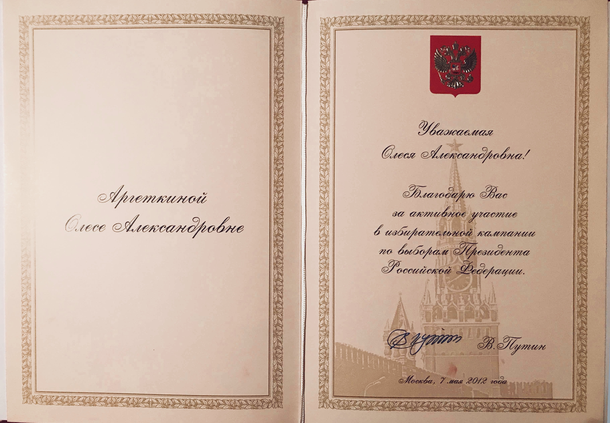
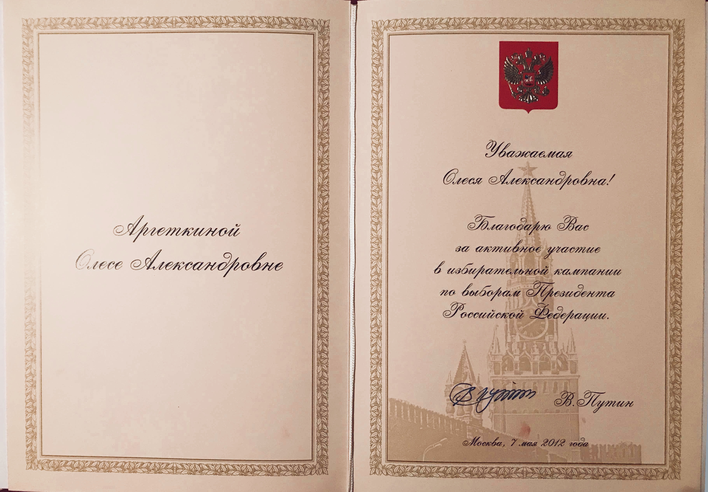

Вот
твой уникальный шанс
стать счастливым и создать свою жизнь такой, какой хочешь
именно ты
твой уникальный шанс
стать счастливым и создать свою жизнь такой, какой хочешь
именно ты
Международное движение развития личности
Личный коучинг (не тренинг), где ты реализуешь свои цели, вырвешься из рутины и начнешь жить яркой жизнью здесь и сейчас.
Начать сейчас
тебе важно
жить прямо сейчас и
по-крупному
ты знаешь, что можно жить ярче и интереснее, но все никак не решишься на этот "безумный" шаг
к черту Успешный Успех!
Ты можешь по-другому: так, как важно именно тебе
здесь ты найдешь себя
и собственные критерии
счастья
вершины все круче, завоевания больше, а счастья все нет?
Если бы ты мог остановиться, то увидел, что ты
А ты вообще знаешь, какой ты и что действительно твое?
Счастливый это как?
Почему же на пути к твоему счастью нужен коуч?
Без проводника пройти этот путь невозможно - так устроен мозг.
Это только кажется, что просто - ты удивишься, насколько несвободен, и потому не
так счастлив и не так успешен.
Важно определить, какие цели и желания твои истинные, а какие навязаны извне.
в основе коучинга лежит принцип гения работы с личностью Милтона Эриксона.
В процесс нашей работы ты действительно найдешь для себя, как:
Эффект коучинга - это рост, длящийся во времени, и те процессы, инсайты и трансформации, которые мы запустим, будут продолжать интегрироваться в вашу жизнь
Где гарантии у твоего спортивного тренера, что ты будешь красивым и здоровым до глубокой старости?
В коучинге так же: результат глубоко индивидуален.
Но абсолютно точно без коучинга у тебя не будет и десятой части такого.
Хочешь реальных изменений, будешь работать и брать ответственность за свою жизнь - будет все и даже лучше.
Да, не сразу и не просто.
Если бы это было так легко, как многие обещают в рекламе, то большинство твоих знакомых уже заполнили бы строчки Forbes,
переехали в майами, взяли Олимпийское "золото" и зажили в гармонии с миром
В твоей жизни реально создать все, что для тебя действительно важно, а моя программа - мощнейший катализатор всех этих процессов
А когда?
Если ты прямо сейчас ничего не предпримешь, то уже ничего никогда не изменится.
Представь, что ты живешь в этом режиме еще год, три, пять, десять...
Что тогда есть в твоей жизни из того, что тебе не нравится
И чего нет из того, о чем мечтаешь?
Ты думаешь, что еще много времени, ты успеешь?
70 лет - средняя продолжительность жизни человека в России
Не страшно?
Для большинства время так и уйдет напрасно, многие желания и возможности останутся
недостижимыми.
А потом будет слишком поздно.
И это еще один веский повод

 
